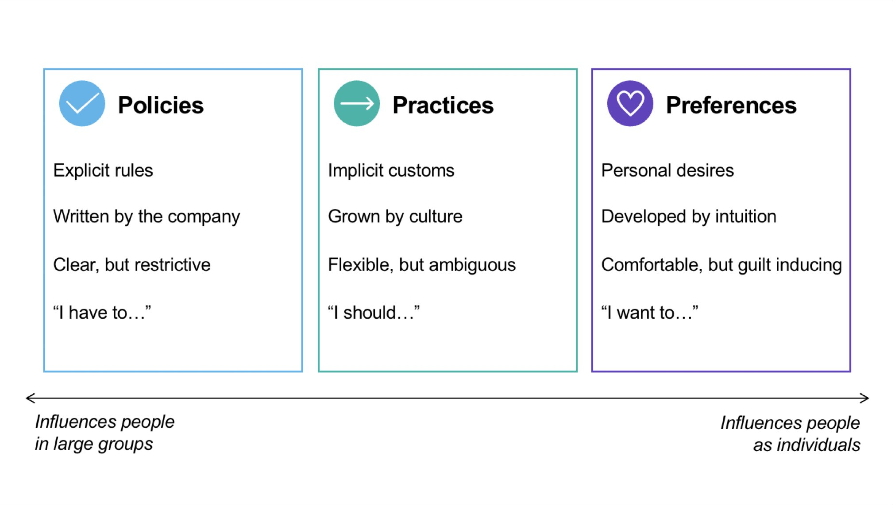
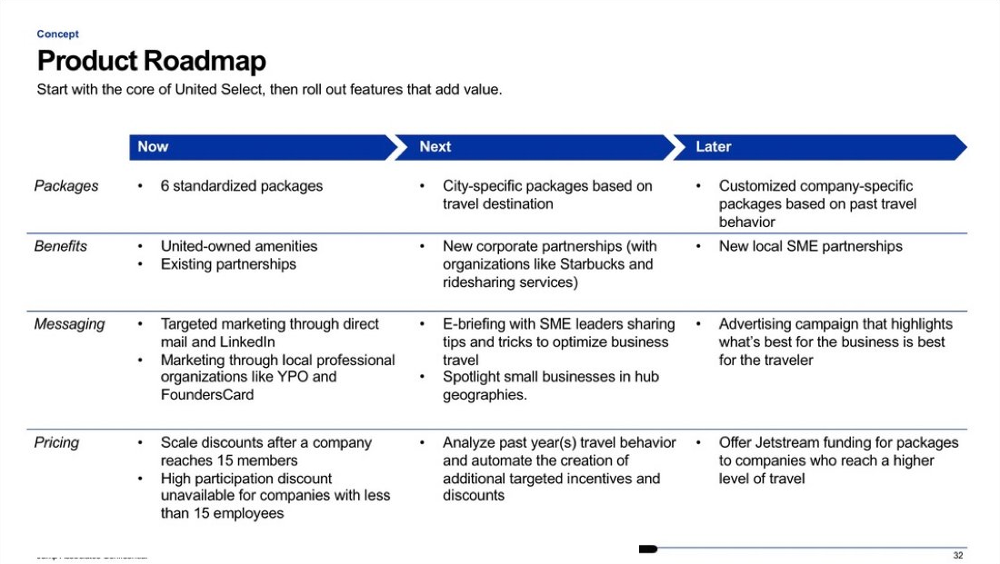

A segment caught between two programs
Most airline loyalty programs were designed for two audiences: individual frequent flyers and large corporations with managed travel accounts. Small businesses, traveling regularly but without a procurement team or negotiated corporate rate, had no purpose-built offering.
The airline had a hypothesis that a dedicated small business program could unlock meaningful revenue. As Project Lead, I scoped and ran the full process: secondary market sizing, ethnographic fieldwork with CEOs and CFOs at their offices, a one-day video-based stakeholder work session, and a concept deliverable that included a member journey, product roadmap, P&L, and five-year growth trajectory.

Insights session room with participant profiles and research findings panels.
Small businesses abide by practices
I recruited CEOs and CFOs from 10 small businesses and conducted 3-hour in-context ethnographic interviews at each company's office. Seeing people in their actual environment, surrounded by their team and the rhythms of their workday, produced a quality of insight that a conference room cannot replicate.
The central finding was a structural distinction about how small businesses govern behavior. Large companies are governed by explicit policies. Individuals are governed by personal preferences. Small businesses operate by something in between: practices, informal customs grown by culture, flexible but ambiguous, and enforced by social norms rather than rules.

The Policies / Practices / Preferences framework, the core reframe from the research.
This reframe changed the design problem. A corporate traveler says "I have to." An SMB owner says "I should." A successful program had to work with the peer-trust dynamics and informal norms that actually drive small business decision-making, not against them.
| Small businesses are governed by… | Which means… |
|---|---|
| Practices, not policies | Implicit norms, not explicit rules |
| Peer guidance, not top-down mandates | Trust networks matter more than program marketing |
| Community belonging, not just individual rewards | A program needs to feel like an in-group, not a points scheme |
| "I should," not "I have to" or "I want to" | Decisions carry social weight and mild guilt when broken |
Immersing stakeholders before designing anything
Rather than presenting findings in a deck and moving to a whiteboard, I ran a one-day video-based insights work session with stakeholders from IT, Sales, Product, and Marketing. I curated clips from the ethnographic interviews so stakeholders could hear business owners talk about peer networks, travel decisions, and their relationship with policy in their own words.
Stakeholders then ideated from that shared context rather than from a summary slide. The session produced a range of concepts, each evaluated across desirability, viability, and feasibility before converging on a direction.
"SMBs don't have or want policy. They manage with norms. Big companies are adopting practices too, just like SMBs."
— Stakeholder, captured during the work session
The work session room: synthesis wall capturing assumptions tested against what the research actually showed.
An invite-only program built on peer trust
The concept that emerged was shaped directly by the practices insight. A standard points program would replicate the individual-flyer model. A managed corporate account would impose the policy model. Neither fit how small businesses actually operate.
The program is invite-only: members refer peers from their professional network, not the airline. Joining through a trusted contact changes the relationship from transactional to communal. Individual travelers choose packages that flex around their business needs, and benefits extend beyond flights to reduce broader business friction.

Member journey: from peer invitation through sign-up, package selection, and referral reward.
The concept deliverable included a member journey, a three-horizon product roadmap across packages, benefits, messaging, and pricing, and a financial model projecting growth from a single pilot market to national scale.

Product roadmap across Now / Next / Later, covering packages, benefits, messaging, and pricing tracks.
A concept sized for the market
The financial model projected growth from a single hub city pilot to 14 markets over five years, reaching 25,000 national members and 4,000 SMB partnerships.
On video-based immersion as a design tool
The video-based work session format is the most effective tool I have used for closing the gap between research and design. When stakeholders hear a business owner describe how they make decisions in their own words, they internalize the customer in a way a summary slide cannot produce. The output is not just better-informed ideas: it is a shared mental model across functions that reduces re-litigation of findings later in the process. I now build the clip selection and editing time explicitly into the project plan from the start. This project also reinforced the value of financial modeling as a design deliverable. Attaching a P&L and growth trajectory to the concept changed the conversation with stakeholders from "interesting" to "how do we pilot this."
"Lauren is someone you always want on your team. She's enthusiastic, wicked smart, and incredibly intentional."
— Mike Smith, Jump Associates